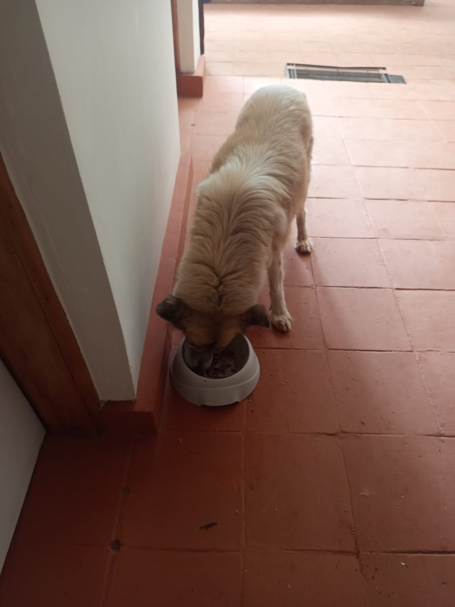
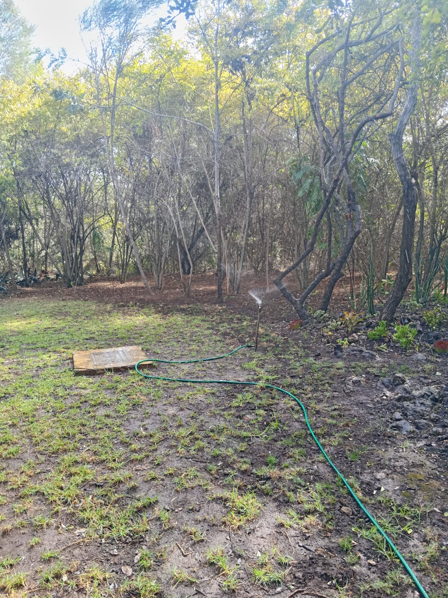
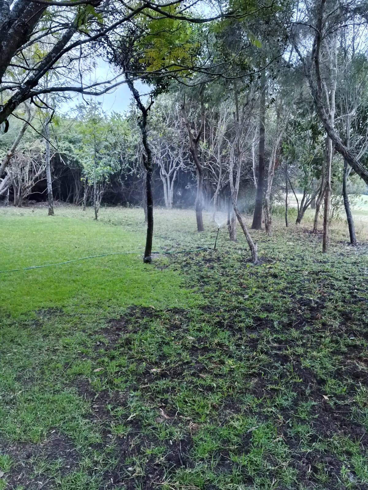
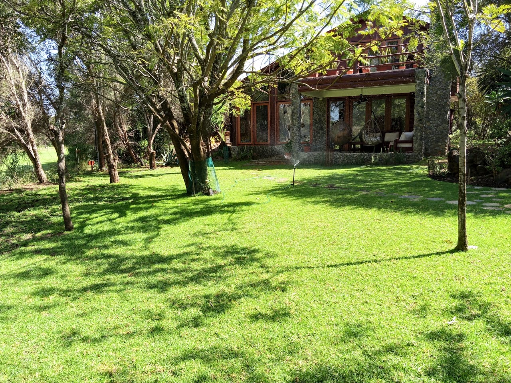

Mucheru World of Golf
Field civil engineering and landscape shaping operations at Mucheru World of Golf advanced steadily across multiple fronts under the on-site leadership of supervisors Ken and Kinoti:
- Drainage Trenching Across Five Putting Greens (Greens No. 10, 13, 15, 16 & 17): Ground excavation crews deployed across five designated green complexes—specifically Green No. 10, Green No. 13, Green No. 15, Green No. 16, and Green No. 17. Deep, uniform drainage channels were manually excavated through the perimeter subgrade and tied directly into subterranean outlet conduits beneath the gravel foundation layers.
- Dedicated Irrigation System Trenching: Excavation teams excavated continuous utility trenches designated for the primary golf course irrigation piping. These channels are engineered with uniform slopes and depths to house high-density polyethylene (HDPE) and PVC main distribution lines that supply high-pressure pop-up sprinklers across fairways and greens.
- Volcanic Pumice Aggregate Transfer to Green No. 10: Site labor crews transferred volcanic pumice aggregate onto the geotextile-lined basin of Green No. 10. The lightweight, highly porous pumice provides optimal water percolation and rootzone aeration, establishing an elite sub-base matrix over the fractured rock foundation.
- Timber Clearance & Haulage to Designated Course Sites (Overseen by Kinoti): Dedicated haulage personnel utilized tractor trailers to load and transfer substantial quantities of felled tree trunks, large timber logs, and trimmed branches from active development corridors to designated storage and processing locations across the golf site.
Key Accomplishments — Mucheru World of Golf
Subgrade drainage trenching successfully excavated across 5 greens (Nos. 10, 13, 15, 16 & 17); volcanic pumice aggregate transferred onto Green No. 10; main irrigation trench lines dug; and felled timber hauled to designated holding sites.
Visual field records capturing drainage trenching across green complexes, pumice aggregate distribution, and felled timber haulage.

Green No. 10 — Perimeter Trench Excavation
Excavation crew member cutting a clean subgrade drainage trench connecting into the gravel-lined foundation of Green No. 10.

Putting Green Basin — Foundation Grading & Trenching
Wide perspective showing red soil excavation berms, wheelbarrow staging, and crushed aggregate heaps surrounding the putting green foundation.

Putting Green Perimeter — Stringline Trench Alignment
Two site laborers using pickaxes and shovels along a yellow guide stringline to ensure precise alignment of the drainage trench heading into the green basin.

Site Clearing & Haulage — Timber Transport
Tractor and red tipping trailer loaded with timber logs and cleared branches transferring organic debris to designated golf site holding areas.

Green No. 10 — Volcanic Pumice Base Transfer
Expansive view of Green No. 10 foundation bed where labor teams are actively transferring and leveling porous volcanic pumice over the geotextile liner.

Green Subgrade — Trench Depth Profiling
Site worker utilizing a spade to finish and level the linear trench trench-floor connecting to the green containment perimeter.

Drainage Outfall — Subgrade Pipe Connection
Deep excavated trench channel showing direct connection to the black subterranean drainage pipe protruding from beneath the green's gravel matrix.

Linear Drainage Line — Completed Excavation Channel
Straight perspective displaying the clean vertical sidewalls and uniform invert of the excavated drainage trench extending outward from the green edge.

Boundary Corridor — Aerial Drone Trench Survey
Overhead aerial drone capture showing the extended linear utility trench excavated parallel to the course perimeter boundary fence line.

Putting Green Basin — Aerial Trenching Survey
High-altitude drone capture of active subgrade drainage trenching connecting into the contoured putting green foundation and gravel sub-base.

Circular Green Complex — Aerial Alignment Inspection
Aerial drone survey capturing workers profiling radial drainage trenching along the circular putting green's red soil containment berm.

Dual Green Complex — Aerial Landscape Perspective
High-altitude aerial capture displaying two championship putting green complexes simultaneously, featuring contoured red berms and excavated trench channels.

Championship Putting Green — Aerial Progress Survey
High-resolution aerial drone photograph highlighting leveled pumice drainage sub-base, red soil surrounds, and the linear trench outfall corridor.
Putting Green Drainage & Agronomic Integration
Subterranean trenching across Greens 10, 13, 15, 16, and 17, coupled with porous volcanic pumice layering, guarantees rapid downward gravitational water movement, preventing surface ponding and root saturation during high-volume precipitation events.
🎥 Mucheru World of Golf — Site Progress Video
Field video recording documenting active construction progress at the Mucheru World of Golf championship course, capturing trenching operations, pumice transfer, timber haulage, and overall site development.
▶ Watch on YouTubeChaka Farms
Operations across livestock husbandry, farm supply intake, canine unit management, and compound cleanliness proceeded across designated departments at Chaka Farms:
- Dairy Cow Milking Yield (Gross Production): Kamandau executed the morning and evening milking routines, recording a cumulative gross production of 4.5 Litres (strictly in Litres: 2.5L morning yield and 2.0L evening yield).
-
Rations & Deductions Reconciliation: A total of 2.0 Litres was disbursed directly out of the gross milking yield for nutritional and personnel allocations:
- • Goat Kids Ration: 1.0 Litre total (0.5L morning ration + 0.5L evening ration for young stock nutrition).
- • Staff Allocation — Gladys: 0.5 Litres.
- • Staff Allocation — Maasai: 0.5 Litres.
- Net Remaining Farm Milk Reserve: Deducting the 2.0L total allocations from the 4.5L gross yield left an exact net farm reserve of 2.5 Litres safely retained in storage.
- Livestock Feeds & Veterinary Supplies Intake (Overseen by Mr. Gichuhi, Received by Kamandau): A substantial consignment of commercial livestock feeds and animal healthcare products was delivered to the farm store, including 70 kg of Joy Max dairy feed, 50 kg of Maasai Gold feed, 5 kg of Salt Maziwa mineral salt, 100 ml of Kilatix acaricide tick-control dip, and 1 kg of Highchem veterinary supplement.
- Canine Unit Care & Exercise (Overseen by Mwangi): Mwangi managed the canine unit duties, including cooking specialized dog food rations, performing complete kennel sanitization, and conducting structured on-leash walking routines.
- Compound Cleanliness & Maintenance (Overseen by Margaret & Monica): Margaret and Monica performed compound cleanliness routines, sweeping farm pathways, clearing organic litter, and maintaining orderly farm grounds.
- Completion of Farm Pathway Refining (Overseen by Kinoti): Ground shaping personnel finalized the grading, smoothing, and edging of the farm pathway network initially laid out on Saturday. The refined pathways follow natural contours, providing clean, unobstructed access routes across Chaka Farms.
Key Accomplishments — Chaka Farms
Dairy cow milking recorded at 4.5 Litres gross with 2.0 Litres disbursed to goat kids and staff, leaving 2.5 Litres in net farm reserve; 126 kg of livestock feed and veterinary supplies successfully received and inventoried; canine unit routines and compound cleanliness executed; and farm pathway refining completed under Kinoti's oversight.
Quantitative daily milk production ledger recorded strictly in Litres (L). Rations and allocations represent authorized disbursements drawn directly out of the gross cow milking yield:
| Item / Description | Morning (L) | Evening (L) | Total (L) | Deduction (L) | Farm Balance (L) |
|---|---|---|---|---|---|
| Cow Milking Yield (Gross Production) | 2.5 L | 2.0 L | 4.5 L | — | 4.5 L |
| Goat Kids Ration (Young Stock Feed) | 0.5 L | 0.5 L | 1.0 L | - 1.0 L | — |
| Staff Allocation — Gladys | — | 0.5 L | 0.5 L | - 0.5 L | — |
| Staff Allocation — Maasai | — | 0.5 L | 0.5 L | - 0.5 L | — |
| Total Allocations Deducted | 0.5 L | 1.5 L | - 2.0 L | - 2.0 L | Disbursed |
| Net Remaining Farm Balance | 2.0 L | 0.5 L | 2.5 L Net | — | 2.5 L |
Dairy Production & Disbursement Reconciliation Audit
Gross production reached 4.5 Litres (2.5L morning + 2.0L evening). Deductions drawn directly out of the gross volume totaled 2.0 Litres (1.0L for goat kids across morning and evening feedings, 0.5L for Gladys, and 0.5L for Maasai), leaving an exact audited net farm balance of 2.5 Litres retained in cold storage.
Delivery log of commercial livestock feeds and veterinary healthcare supplies received at Chaka Farms store on September 14, 2026:
| Item Description | Quantity | Category / Intended Use | Procured By | Received By |
|---|---|---|---|---|
| Joy Max Feed | 70 kg | Commercial Dairy Livestock Feed | Mr. Gichuhi | Kamandau |
| Maasai Gold | 50 kg | High-Nutrient Livestock Feed | Mr. Gichuhi | Kamandau |
| Salt Maziwa | 5 kg | Mineral Salt Lick / Lactation Support | Mr. Gichuhi | Kamandau |
| Kilatix | 100 ml | Veterinary Acaricide / Tick Control Dip | Mr. Gichuhi | Kamandau |
| Highchem | 1 kg | Veterinary Health / Feed Supplement | Mr. Gichuhi | Kamandau |
| Total Feeds & Dry Goods | 126.0 kg | Consolidated feeds, mineral salts & veterinary pharmaceuticals stocked | ||
Livestock Nutrition & Herd Health Inventory
The addition of 120 kg of specialized feed concentrates (Joy Max & Maasai Gold) along with essential mineral salt and anti-parasitic veterinary supplies secures uninterrupted dairy lactation support and herd pest protection.
Departmental operational log covering canine unit welfare, kennel hygiene routines, on-leash training, and general farm compound maintenance:
- Canine Nutritional Cooking & Feeding (Mwangi): Mwangi prepared freshly cooked dietary meals for the canine unit dogs, monitoring food portions to ensure high nutritional intake and proper hydration.
- Kennel Cleaning & Sanitation (Mwangi): Complete washing, disinfection, and waste clearing of the dog kennel stalls and sleeping quarters were executed to maintain clean, hygienic housing conditions.
- Structured On-Leash Walking (Mwangi): The dogs were exercised through structured on-leash walking sessions around the farm perimeter trails, reinforcing behavioral manners and leash discipline.
- General Compound Cleanliness & Upkeep (Margaret & Monica): Margaret and Monica carried out sweeping and raking across the main farm compound, clearing pathways, removing fallen debris, and organizing farmstead surroundings.
Canine Welfare & Environmental Standards
All canine stalls sanitized and dried; dogs exercised on leash and fed cooked rations; farm compound swept clean with high environmental standards maintained across all working quarters.
Visual field record documenting completed farm pathway refining at Chaka Farms.

Farm Access Corridor — Refined Pathway
Cockpit view from the tractor displaying the newly refined, smoothed pathway corridor cut cleanly alongside the pine and acacia tree line at Chaka Farms, overseen by Kinoti.
Kabete Residence
Civil structural demolition, electrical utility safety disconnections, and residential maintenance advanced at Kabete Residence, with operations overseen and field updates shared by Njoki:
- Clearance and Demolition at Outdoor Fireplace: Civil labor crews conducted intensive ground clearance and demolition around the outdoor fireplace embankment. Workers excavated earthen slopes, broke down stone rubble, and used axes to chop and remove a massive underground tree root system that obstructed the foundation grade.
- Tent Post Demolition for Retaining Wall Footing: To clear the structural corridor for the upcoming retaining wall at the fireplace, demolition workers utilized ladders and heavy sledgehammers to demolish and detach the structural steel tent post, safely lowering the heavy metal column from the upper terrace railing.
- Demolition of Gardener Store Adjacent to Cold Room (In Progress): Structural dismantling of the old gardener store situated next to the cold room progressed smoothly. Crews uninstalled exterior wooden panels, removed timber framing and door posts, and sorted salvaged building components.
- Three-Phase Electrical Cable Disconnection & Condition Inspection: Electricians safely disconnected the underground three-phase power lines from the main supply. A physical condition audit revealed that only one cable remained sound, while the remaining cables had suffered severe corrosion, insulation degradation, and heavy rusting over time.
- Main Gate Street Lighting Maintenance: Maintenance personnel replaced a faulty bulb on the main entrance gate street lighting bollard, restoring proper illumination along the access roadway.
- Domestic Pet Care & Nutrition: Senior golden retriever Ajabu was fed his dedicated meal on the shaded tiled veranda, while resident cats Reo, Mocha, and Aiko were served and fed together indoors.
Key Accomplishments — Kabete Residence
Heavy steel tent post demolished and removed to clear the fireplace retaining wall alignment; massive tree roots chopped out; cold room gardener store dismantling actively in progress; degraded three-phase cables safely disconnected; street lighting repaired; and domestic pets well fed.
Photographic evidence documenting structural clearances, tent post demolition, tree root removal, electrical cable disconnection, gardener store dismantling, street lighting maintenance, and resident pets.

Outdoor Fireplace — Embankment Clearance & Excavation
Civil workers wearing high-visibility vests excavating red subsoil and clearing rock debris along the retaining foundation beside the stone fireplace wall.

Retaining Wall & Store Footprint — Demolition Overview
Elevated wide shot showing labor crew dismantling masonry, excavating foundation soil, and clearing debris adjacent to the cold room entrance.

Gardener Store — Dismantling Door Framing
Demolition worker leveraging a heavy timber post from the entrance frame of the gardener store next to the cold room.

Gardener Store — Salvaging Structural Timber
Worker clearing dismantled wooden framing sections and timber boards from the gardener store entrance corridor for sorting.

Main Underground Supply — Three-Phase Conduit Line
Exposed subterranean conduits in the earthen embankment where three-phase electrical supply lines were disconnected from the main lines.

Electrical Cable Inspection — Corrosion & Wear
Uncovered underground cables displaying heavy wear, severe rust oxidation, and degraded insulation, confirming only a single cable remained in viable condition.

Electrical Isolation — Conduit Wrapping Stripped
Stripped and unraveled insulating protective wrapping removed during the disconnection and extraction of the degraded three-phase cables.

Fireplace Retaining Wall — Tent Post Demolition
Demolition worker positioned on a ladder using a sledgehammer to fracture masonry and detach the heavy steel tent post obstructing the retaining wall alignment.

Structural Clearance — Tent Post Removal
Two workers carefully lowering the detached structural steel tent post from the upper terrace railing down the excavated slope.

Embankment Clearance — Massive Tree Root Removal
Worker chopping away an immense tree root system unearthed during excavation to prepare a stable foundation bed for the new retaining wall.

Street Lighting — Main Gate Bulb Replacement
New energy-efficient bulb staged atop the entrance gate street lamp bollard, replacing the burned-out light bulb along the access driveway.

Domestic Pet Care — Ajabu the Golden Retriever
Senior golden retriever Ajabu feeding comfortably from his bowl on the tiled veranda at Kabete Residence.

Resident Felines — Reo, Mocha & Aiko
Resident cats Reo, Mocha, and Aiko eating their meal simultaneously from three dedicated bowls along the residence floor.
Civil Structural Engineering & Electrical Safety Protocol
Demolition of the tent post and root extraction clears structural clearance for the planned masonry retaining wall, while isolating corroded underground three-phase cables prevents potential short-circuit hazards prior to rewiring.
Amani Cottage
Comprehensive residential housekeeping and landscape care at Amani Cottage were executed under the direct oversight of Edwin:
- Upstairs to Downstairs Comprehensive Housekeeping: Edwin performed extensive interior dusting and deep cleaning spanning all levels of the cottage. High-level dusting and cleaning covered the upper-level mezzanine, wooden balustrades, staircase steps, and ground-floor sunken lounge with stone fireplace.
- Kitchen & Living Room Presentation: The modern kitchen—featuring flagstone flooring, slatted wood island counters, and timber cabinetry—was thoroughly sanitized, polished, and dusted to immaculate executive standards.
- Lawn Sprinkler Irrigation: Mechanical sprinkler irrigation units were operated across the main front lawn and boundary perimeter. Pressurized rotary heads delivered uniform water coverage across the turfgrass, penetrating rootzones beneath the canopy of mature trees.
- Grounds Sweeping & Floral Watering: In addition to automated sprinkler operations, Edwin swept fallen leaves and dried debris from exterior stone pathways and hand-watered ornamental flowerbeds surrounding the cottage perimeter.
Key Accomplishments — Amani Cottage
Complete multi-level dusting and deep cleaning completed across upstairs and downstairs living areas; kitchen and lounge polished; rotary sprinkler irrigation run across front grounds; and all flowerbeds thoroughly watered.
Photographic records displaying cleaned and dusted interior living and kitchen areas, rotary lawn sprinkler irrigation, and pristine grounds presentation.

Cottage Kitchen — Dusted & Sanitized
Modern cottage kitchen displaying polished stone flagstone floors, clean timber cabinetry, and spotless countertop island after thorough housekeeping.

Sunken Lounge — Multi-Level Housekeeping
High-angle view from the wooden spiral staircase looking down into the impeccably dusted living room featuring white sofas, stone fireplace, and rustic chandelier.

Boundary Grounds — Sprinkler Irrigation
Rotary sprinkler head actively dispersing water across the boundary lawn and peripheral wooded grounds at Amani Cottage.

Lawn Care — Pressurized Water Dispersion
Fine irrigation mist showering over freshly fertilized lawn areas beneath established woodland trees, supporting healthy turfgrass development.

Front Grounds & Facade — Sprinkler Hydration
Wide perspective of Amani Cottage's rustic stone exterior facade and balcony overlooking the vibrant green front lawn with active sprinkler irrigation.
Landscape Maintenance & Property Presentation Standards
Regular scheduled sprinkler irrigation preserves lush lawn vitality amidst warm regional weather, while structured multi-level domestic housekeeping maintains pristine executive retreat readiness.